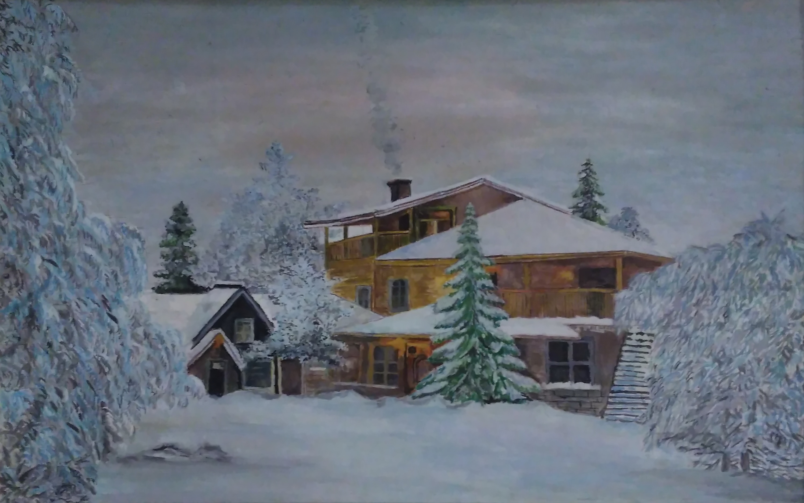

На опушке среди леса,
В зимнюю красу.
Под пушистый снег завеса,
Дом стоит в лесу.
По среди деревьев пышных,
Елок и берез.
Вдалеке не видно даже,
Транспортных дорог.
На цепи любимый пес,
Даже лошадь тут живет.
Дом большой в два этажа,
В стайке два стоят быка.
Тут семья живет большая.
И у них корова есть.
Топят печку, дров кидая.
Чтобы у камина сесть.
Скоро кто- то на работу,
Вскинет за спину ружье.
Лыжи на ноги оденет,
И умчится вдаль в тайгу.
Не простая тут работа,
Средь лесных зверей.
Охраняет добрый егерь,
Жителей лесных.
Е.Гурова
